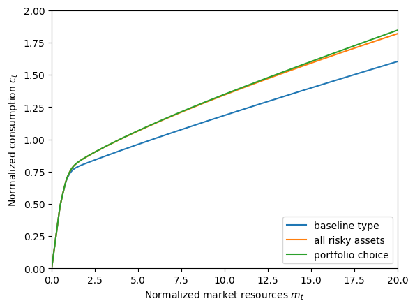
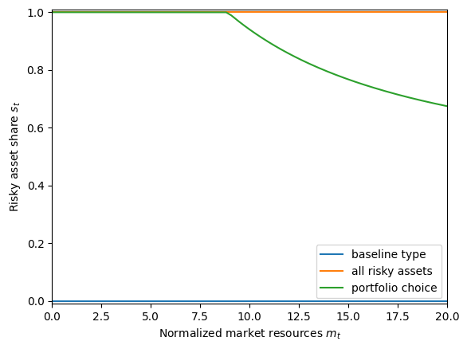
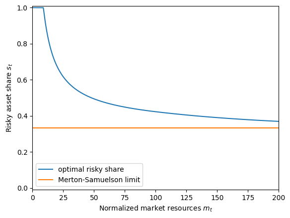
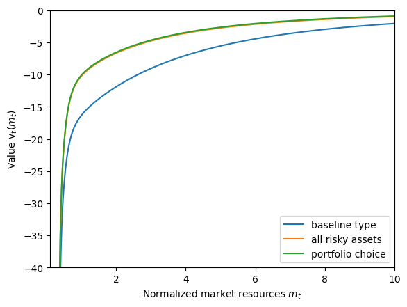
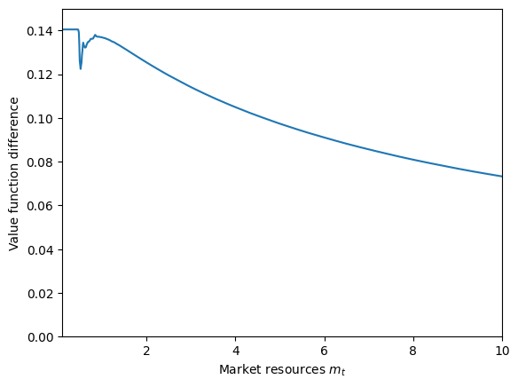

Interactive online version:
Assets with Risky Returns: Portfolio Choice#
In the workhorse IndShockConsumerType model (and many others), consumers can save wealth in one risk-free asset. HARK also has AgentType subclasses that add a second asset with risky returns, and allow agents to allocate their wealth between the risky and risk-free asset. This notebook describes the core class for handling portfolio choice, the RiskyAssetConsumerType. Additional advanced options are provided by PortfolioConsumerType; see here.
[1]:
from time import time
from HARK.models import IndShockConsumerType, RiskyAssetConsumerType
from HARK.ConsumptionSaving.ConsRiskyAssetModel import init_risky_asset
from HARK.interpolation import ConstantFunction
from HARK.utilities import plot_funcs
import matplotlib.pyplot as plt
mystr = lambda number: f"{number:.4f}"
\(\newcommand{\CRRA}{\rho}\) \(\newcommand{\LivPrb}{\mathsf{S}}\) \(\newcommand{\DiscFac}{\beta}\) \(\newcommand{\PermGroFac}{\Gamma}\) \(\newcommand{\Rfree}{\mathsf{R}}\) \(\newcommand{\Risky}{\mathfrak{R}}\)
Portfolio Choice Model Statement#
The primary difference between the baseline consumption-saving model and the portfolio choice model is the presence of a second asset, with risky returns \(\Risky_t\) distributed according to some known distribution \(G\). The agent has a second control variable, \(s_t\), that determines the share of wealth allocated to the risky asset. The model can be expressed in Bellman form as:
\begin{align*} \text{v}_t(m_t) &= \max_{c_t, s_t} \frac{c_t^{1-\CRRA}}{1-\CRRA} + \LivPrb_t \DiscFac \mathbb{E} \left[ (\PermGroFac_{t+1} \psi_{t+1})^{1-\CRRA}\text{v}_{t+1}(m_{t+1}) \right] \\ &\text{s.t.} \\ a_t &= m_t - c_t, \\ a_t &\geq 0, \\ s_t &\in [0,1], \\ m_{t+1} &= a_t R_{t+1}/(\PermGroFac_{t+1} \psi_{t+1}) + \theta_{t+1}, \\ R_{t+1} &= s_t \Risky_{t+1} + (1-s_t) \Rfree_{t+1}, \\ (\psi_{t+1},\theta_{t+1}) &\sim F_{t+1}, \\ \Risky_{t+1} &\sim G, \\ \mathbb{E}[\psi] &= 1. \\ \end{align*}
Note that with portfolio choice, HARK disallows borrowing: the “artificial borrowing constraint” is hardwired at \(a_t \geq 0\) rather than being a parameter that can be set. Moreover, we strictly bound the risky asset share on the unit interval.
Solving the Portfolio Choice Model#
The key to efficiently solving the RiskyAssetConsumerType model is to see that while the choice of two controls is made simultaneously, the problem is more easily solved if we imagine them to be made sequentially, back-to-back. First, the agent chooses how much to consume \(c_t\) and how much to save \(a_t\), and then they choose how to split that wealth between the risky and risk-free asset with \(s_t\).
When solving the model by backward induction, HARK thus solves the portfolio allocation problem first. Fixing a grid of \(a_t\) values, the solver finds the \(s_t\) that maximizes expected value at each gridpoint. Optimal consumption \(c_t\) associated with each \(a_t\) can then be found using the usual endogenous grid method approach.
First Order Conditions#
As usual, let’s define the end-of-period value function, then express the model in “EGM form” before deriving the first order conditions for optimality.
\begin{align*} \mathfrak{v}_t(a_t, s_t) &\equiv \LivPrb_t \DiscFac \mathbb{E} \left[ (\PermGroFac_{t+1} \psi_{t+1})^{1-\CRRA}\text{v}_{t+1}(m_{t+1}) \right] \\ &\text{s.t.} \\ m_{t+1} &= a_t R_{t+1}/(\PermGroFac_{t+1} \psi_{t+1}) + \theta_{t+1}, \\ R_{t+1} &= s_t \Risky_{t+1} + (1-s_t) \Rfree_{t+1}, \\ (\psi_{t+1},\theta_{t+1}) &\sim F_{t+1}, \\ \Risky_{t+1} &\sim G. \\ \end{align*}
The end-of-period state now includes risky share \(s_t\), but this information is “used up” by the time next period’s state \(m_t\) is attained with the revelation of risky return \(\Risky_{t+1}\). Substituting this new definition into the original model yields the succinct EGM form:
\begin{align*} \text{v}_t(m_t) &= \max_{c_t, s_t} \frac{c_t^{1-\CRRA}}{1-\CRRA} + \mathfrak{v}_t(a_t, s_t) \\ &\text{s.t.} \\ a_t &= m_t - c_t, \\ a_t &\geq 0, \\ s_t &\in [0,1]. \\ \end{align*}
To derive the first order conditions (assuming an interior solution), we can take the derivative of the maximand with respect to each of the two controls:
\begin{align*} \text{FOC-c:} ~~~ & c_t^{-\CRRA} - \mathfrak{v}^a_t(a_t, s_t) = 0. \\ \text{FOC-s:} ~~~ & \mathfrak{v}^s_t(a_t, s_t) = 0. \\ \end{align*}
The first order condition for consumption is the standard result that the marginal utility of consumption must equal the marginal value of end-of-period assets, else the agent could slightly change their consumption and attain greater value. The first order condition for the risky asset share is not very informative as-is. Let’s use the definition of end-of-period value to “unpack” the FOC-s.
\begin{align*} \frac{\partial m_{t+1}}{\partial s_t} &= a_t (\Risky_{t+1} - \Rfree_{t+1}) / (\PermGroFac_{t+1} \psi_{t+1}) \\ \Longrightarrow \mathfrak{v}^s_t(a_t, s_t) &= \LivPrb_t \DiscFac a_t \mathbb{E} \left[ (\Risky_{t+1} - \Rfree_{t+1}) (\PermGroFac_{t+1} \psi_{t+1})^{-\CRRA}\text{v}_{t+1}'(m_{t+1}) \right]. \\ \end{align*}
With the usual envelope condition that marginal value of market resources equals the marginal utility of optimal consumption, \(\text{v}_{t}'(m_{t}) = u'(c_t) = c_t^{-\CRRA}\), this expression for the marginal return to risky asset share can be substituted into the first order condition to yield an interpretable expression for interior optimality:
\begin{align*} \LivPrb_t \DiscFac a_t \mathbb{E} \left[ (\Risky_{t+1} - \Rfree_{t+1}) (\PermGroFac_{t+1} \psi_{t+1})^{-\CRRA} c_{t+1}^{-\CRRA} \right] &= 0 \\ \Longrightarrow \mathbb{E} \left[ (\Risky_{t+1} - \Rfree_{t+1}) (\PermGroFac_{t+1} \psi_{t+1} c_{t+1})^{-\CRRA}) \right] &= 0. \\ \end{align*}
In the second line, the outer factor \(\LivPrb_t \DiscFac a_t\) is divided out because it is irrelevant, and future marginal utility is combined under a single exponent.
Marginal utility of consumption is always positive, so the first order condition for optimal risky share can only be satisfied with equality when the risky return \(\Risky_{t+1}\) sometimes yields more than the risk-free asset and sometimes yields less than the risk-free asset. Intuitively, if the risky asset always returns at least \(\Rfree_{t+1}\), then the agent should put all of their money into it; conversely, if the risk-free asset never returns more than the risk-free asset, then it would be foolish to ever put anything into it.
The math is less obvious, but the latter statement can be strengthened. The agent will put some of their wealth into the risky asset if and only if its mean return exceeds the risk-free return: \(s_t \geq 0 \Longleftrightarrow \mathbb{E} [\Risky_{t+1}] > \Rfree_{t+1}\). A risk averse agent will not tolerate a risky assets unless there’s a positive net return on average. And no matter how risk averse they are, and no matter how small the equity premium is, the optimal portfolio share is strictly positive.
Finding Optimal Consumption#
Once \(s_t\) has been found for each \(a_t\) in the grid, optimal consumption \(c_t\) can be found by solving FOC-c in the usual way:
\begin{align*} c_t^{-\CRRA} - \mathfrak{v}^a_t(a_t, s_t) &= 0 \\ \Longrightarrow c_t &= \mathfrak{v}^a_t(a_t, s_t)^{-1/\CRRA}. \end{align*}
Also as usual, the endogenous \(m_t\) gridpoint from which this consumption must have been chosen can be recovered by inverting the intraperiod budget constraint: \(m_t = a_t + c_t\).
The policy functions can then be constructed by linearly interpolating over the \((m_t,c_t)\) pairs for the consumption function and the \((m_t, s_t)\) pairs for the portfolio share function.
Example Parameters to Specify a RiskyAssetConsumerType#
Add some introductory text here, and check all of the values below.
Parameter |
Description |
Code |
Example value |
Time-varying? |
|---|---|---|---|---|
\(\DiscFac\) |
Intertemporal discount factor |
|
\(0.96\) |
|
\(\CRRA\) |
Coefficient of relative risk aversion |
|
\(2.0\) |
|
\(\Rfree_t\) |
Risk free interest factor |
|
\([1.03]\) |
\(\surd\) |
\(\mu_\Risky\) |
Mean risky asset return |
|
\(1.0804\) |
|
\(\sigma_\Risky\) |
Standard deviation of log risky asset return |
|
\(0.1629\) |
|
\(N_\Risky\) |
Number of equiprobable nodes in risky asset return distribution |
|
\(5\) |
|
\(\LivPrb_t\) |
Survival probability |
|
\([0.98]\) |
\(\surd\) |
\(\PermGroFac_{t}\) |
Permanent income growth factor |
|
\([1.01]\) |
\(\surd\) |
\(\sigma_\psi\) |
Standard deviation of log permanent income shocks |
|
\([0.1]\) |
\(\surd\) |
\(N_\psi\) |
Number of discrete permanent income shocks |
|
\(7\) |
|
\(\sigma_\theta\) |
Standard deviation of log transitory income shocks |
|
\([0.1]\) |
\(\surd\) |
\(N_\theta\) |
Number of discrete transitory income shocks |
|
\(7\) |
|
\(\mho\) |
Probability of being unemployed and getting \(\theta=\underline{\theta}\) |
|
\(0.05\) |
|
\(\underline{\theta}\) |
Transitory shock when unemployed |
|
\(0.3\) |
|
\(\mho^{Ret}\) |
Probability of being “unemployed” when retired |
|
\(0.0005\) |
|
\(\underline{\theta}^{Ret}\) |
Transitory shock when “unemployed” and retired |
|
\(0.0\) |
|
\((none)\) |
Period of the lifecycle model when retirement begins |
|
\(0\) |
|
\((none)\) |
Minimum value in assets-above-minimum grid |
|
\(0.001\) |
|
\((none)\) |
Maximum value in assets-above-minimum grid |
|
\(20.0\) |
|
\((none)\) |
Number of points in base assets-above-minimum grid |
|
\(48\) |
|
\((none)\) |
Exponential nesting factor for base assets-above-minimum grid |
|
\(3\) |
|
\((none)\) |
Additional values to add to assets-above-minimum grid |
|
\(None\) |
|
\(K\) |
Number of discrete points in risky share grid |
|
\(25\) |
|
\(L\) |
Number of times to perform an “augmented” risky share search |
|
\(0\) |
|
\((none)\) |
Fixed risky asset share, disallowing portfolio choice |
|
\(1.0\) |
|
\((none)\) |
Indicator for whether |
|
\(False\) |
|
\((none)\) |
Indicator for whether |
|
\(False\) |
|
\((none)\) |
Indicator for whether \(F_t\) and \(G\) are independent |
|
\(True\) |
The RiskyShareFixed parameter (default of \(1.0\)) represents the constant level of \(s_t\) that must be chosen. To actually allow portfolio choice, it should be set to \(None\).
The model above specified the income shock distribution \(F_t\) and the risky return distribution \(G\) as two separate distributions, and the default parameters treat them this way. This allows expectations to be taken over one distribution at a time, rather than jointly. However, our solvers can handle the (slightly unusual) case in which income shocks are correlated with asset returns. When IndepDstnBool is set to False, the solver uses the trivariate ShockDstn rather
than the independent IncShkDstn and RiskyDstn separately.
Example Implementations of RiskyAssetConsumerType#
Because the portfolio allocation model extends the workhorse IndShockConsumerType, let’s compare the consumption function in the baseline model to that found with a RiskyAssetConsumerType. Moreover, we will solve two versions of the latter problem: with and without portfolio choice. When there is no portfolio choice, we leave RiskyShareFixed at its default value of \(1.0\), so the agents put all of their wealth into the risky asset. Note that IndShockConsumerType is
equivalent to RiskyAssetConsumerType with RiskyShareFixed set to \(0.0\).
[2]:
# Make a dictionary for the idiosyncratic shocks type that uses common values from the risky asset type
my_params = init_risky_asset.copy()
del my_params["constructors"] # don't want to overwrite this
my_params["CRRA"] = 6.0 # but make them pretty risk averse
my_params["cycles"] = 0 # and infinite horizon
my_params["vFuncBool"] = True # construct the value function when solving
[3]:
# Make and solve an example consumer with idiosyncratic income shocks
# Use init_portfolio parameters to compare to results of PortfolioConsumerType
IndShockExample = IndShockConsumerType(**my_params)
t0 = time()
IndShockExample.solve()
IndShockExample.unpack("cFunc")
t1 = time()
print(
"Solving a consumer with idiosyncratic shocks took " + mystr(t1 - t0) + " seconds.",
)
Solving a consumer with idiosyncratic shocks took 1.3893 seconds.
[4]:
# Make and solve an example consumer with risky returns to savings
# Use init_portfolio parameters to compare to results of PortfolioConsumerType
RiskyReturnExample = RiskyAssetConsumerType(**my_params)
t0 = time()
RiskyReturnExample.solve()
RiskyReturnExample.unpack("cFunc")
t1 = time()
print(
"Solving a consumer with risky returns took " + mystr(t1 - t0) + " seconds.",
)
RiskyReturnExample.unpack("cFunc")
Solving a consumer with risky returns took 1.7591 seconds.
[5]:
# Make and solve an example risky consumer with a portfolio choice
my_params["PortfolioBool"] = True
PortfolioChoiceExample = RiskyAssetConsumerType(**my_params)
t0 = time()
PortfolioChoiceExample.solve()
PortfolioChoiceExample.unpack("cFunc")
PortfolioChoiceExample.unpack("ShareFunc")
t1 = time()
print(
"Solving a consumer with risky returns and portfolio choice took "
+ mystr(t1 - t0)
+ " seconds.",
)
Solving a consumer with risky returns and portfolio choice took 2.6296 seconds.
When comparing consumption functions, we should expect to see the baseline function significantly below the functions that involve risky assets. With \(\CRRA > 1\), giving the consumers access to a higher return risky asset will tend to increase their consumption, as the additional income through higher returns more than offsets the intertemporal substitution effect that pushes them to save more when returns are high.
The consumption function for the “all risky assets model” should be similar to the consumption function for the model with portfolio choice. As we’ll see below, agents with this parameter set want to put most of their wealth into the risky asset (and all of it when \(m_t\) is sufficiently low), so the “all risky” policy function isn’t too different from the optimal portfolio choice. Whether one consumption function is greater than the other is theoretically ambiguous, however. On the one hand, being forced to hold all risky assets means that future wealth is greater on average, which tends to increase consumption today. However, future consumption risk is also greater, which pushes consumption today down.
[6]:
# Compare the consumption functions across the three models
plt.ylim(0.0, 2.0)
plot_funcs(
[
IndShockExample.cFunc[0],
RiskyReturnExample.cFunc[0],
PortfolioChoiceExample.cFunc[0],
],
0.0,
20.0,
xlabel=r"Normalized market resources $m_t$",
ylabel=r"Normalized consumption $c_t$",
legend_kwds={
"labels": ["baseline type", "all risky assets", "portfolio choice"],
"loc": 4,
},
)

As it turns out with our parameters, consumption with free portfolio choice is slightly greater than consumption with all wealth saved in the risky asset.
In the next figure, we plot the risky share function for each of the three models. Of course, only the portfolio choice model has a non-trivial policy function: the all-risky model has \(s_t = 1\) by definition, and the baseline model effectively forces \(s_t = 0\).
The optimal risky portfolio share is a non-increasing function of market resources \(m_t\). Without labor income risk (and with the ability to borrow against future earnings), an agent with CRRA preferences wants to put a constant fraction of their wealth into the risky asset (known as the Merton-Samuelson limit). With labor income risk (and unable to borrow against future earnings), a large portion of agents’ total wealth is inaccessible to them: it is “human wealth” that they will gain access to as they work. Hence as their market wealth \(m_t\) increases, it accounts for a larger and larger share of total wealth, and the optimal fraction of that wealth to allocate to the risky asset decreases.
At sufficiently low \(m_t\), so much total wealth is tied up in future earnings that the agent wishes they could put more than 100% of their assets into the risky asset, but they are not permitted to do so. Above some critical level, their optimal \(s_t\) begins to fall, eventually asymptoting toward the Merton-Samuelson limit.
[7]:
# Compare the risky asset share functions across the three models
plt.ylim(-0.01, 1.01)
plot_funcs(
[
ConstantFunction(0.0),
ConstantFunction(1.0),
PortfolioChoiceExample.ShareFunc[0],
],
0.0,
20.0,
xlabel=r"Normalized market resources $m_t$",
ylabel=r"Risky asset share $s_t$",
legend_kwds={
"labels": ["baseline type", "all risky assets", "portfolio choice"],
"loc": 4,
},
)

We can plot the optimal risky asset share on a much larger scale of \(m_t\) to see its behavior at large wealth values. The Merton-Samuelson limit is pre-computed in HARK and stored in the attribute ShareLimit, so we can plot a constant function for it.
[8]:
# Plot the optimal risky asset share compared to the Merton-Samuelson theoretical limit
MSshare = PortfolioChoiceExample.ShareLimit[0]
plt.ylim(-0.01, 1.01)
plot_funcs(
[
PortfolioChoiceExample.ShareFunc[0],
ConstantFunction(MSshare),
],
0.0,
200.0,
xlabel=r"Normalized market resources $m_t$",
ylabel=r"Risky asset share $s_t$",
legend_kwds={
"labels": ["optimal risky share", "Merton-Samuelson limit"],
"loc": 3,
},
)

Above, we set the parameter dictionary so that HARK would also construct the value function over \(m_t\) while solving each model, which is not required. If we plot these value functions against each other, what should we expect to see?
Obviously, the value function for the portfolio choice model should be the highest among the three. While the other two models are essentially “restricted choice” models for a forced portfolio share, the optimal portfolio choice must yield value at least as great as either model. As described above, as long as the equity premium is positive, the agent will want to put some wealth into the risky asset, and thus the value function for the portfolio choice model must strictly exceed the baseline value function. And as long as the risky asset return is sometimes below the risk free return, the agent will put some wealth into the risk-free asset for sufficiently high wealth levels. Thus the value function for the “all risky assets” model must be lower than the portfolio choice value function.
[9]:
# Compare the value functions for the three models
IndShockExample.unpack("vFunc")
RiskyReturnExample.unpack("vFunc")
PortfolioChoiceExample.unpack("vFunc")
plt.ylim(-40.0, 0.0)
plot_funcs(
[
IndShockExample.vFunc[0],
RiskyReturnExample.vFunc[0],
PortfolioChoiceExample.vFunc[0],
],
0.1,
10.0,
xlabel=r"Normalized market resources $m_t$",
ylabel=r"Value $\text{v}_t(m_t)$",
legend_kwds={
"labels": ["baseline type", "all risky assets", "portfolio choice"],
"loc": 4,
},
)

You can kind of see that the green value function is slightly above the orange value function, but it’s hard to make out. Let’s plot only the difference between those two value functions to see that it’s positive everywhere: value with portfolio choice is strictly above value with restricted asset share.
[10]:
# Plot the difference in value functions between the portfolio choice and all-risky-assets models
vFuncPC = PortfolioChoiceExample.vFunc[0]
vFuncRR = RiskyReturnExample.vFunc[0]
vDiffFunc = lambda m: vFuncPC(m) - vFuncRR(m)
plt.ylim(0.0, 0.15)
plot_funcs(
vDiffFunc,
0.1,
10.0,
xlabel=r"Market resources $m_t$",
ylabel="Value function difference",
)

[ ]: